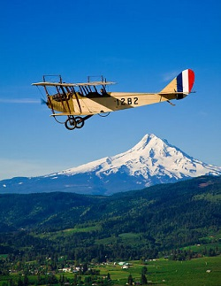
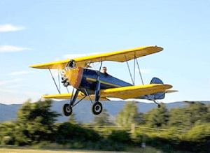
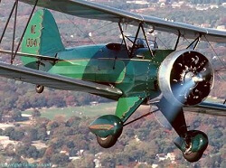
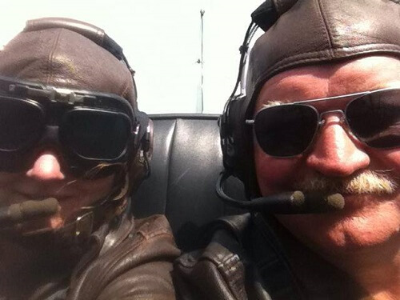
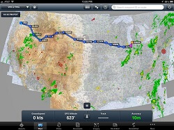
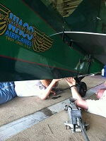
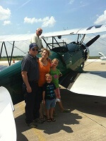
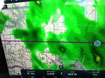
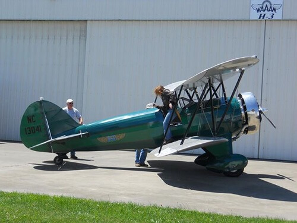

Curtiss JN-4D "Jenny" - WAAAM's Crown Jewel

The Barnstormer's Aeroplane of Choice
WAAAM founder, Terry Brandt, had been searching for a Curtiss Jenny for many years without success before Ben Davidson (WAAAM Chief Pilot 2007-2019) found this one online. It had been dismantled in the nineteen twenties and stored in a barn in Ohio since then.
Designed by Glenn Curtiss and B. Douglas Thomas, the Curtiss JN-4D “Jenny” was the trainer of choice in both England and the U.S. during World War I. Over 9,000 were built by seven companies and it’s estimated that 95% of American and British WWI pilots received training in the Jenny.
One version of the Jenny was used by General Pershing in 1916 to pursue Pancho Villa after he’d attacked the U.S. 13th Cavalry at Camp Furlong, New Mexico.
When WWI ended, the Curtiss Airplane Company bought back large numbers of Jennys, refurbished them and resold them to the civilian market. Many pilots used their Army training to introduce America to flight by “barnstorming” or flying from town to town to show off with acrobatics and wing walking and to sell rides.
The first scheduled air mail flights in the USA in 1918 also used Jennys.
After buying the Jenny as a project and bringing it to Hood River Terry, Tom Murphy and Jeremy Young began restoring her to flying condition.
Boxes of parts were inventoried, the original fabric was removed and every piece of the airframe got the attention it needed to bring the airplane back to life. The pile of parts was exceptionally complete and in good condition. The wood in the airframe is more than 95% original, all the turnbuckles (~300 of them) are original, and the tires, bungees, control wires and fabric were replaced.
At the time, the Jennys were built the covering material was either Grade A Cotton or Irish linen. With an eye to the historical importance of this airplane Jeremy Young provided a 50-60 year-old stock of Irish linen to cover our Jenny. The dope finish was applied by hand with horsehair brushes just as it was done when they were new.
On the morning of May 17, 2008, Tom Murphy pulled the prop to start the OX-5 engine and the museum founder, Terry Brandt, flew our Jenny into WAAAM history with three circuits of the airport.
Restoring the Curtiss Pusher
One of our volunteers has done a good job at documenting just what it takes to restore an antique aircraft.
Our Curtiss Pusher has a long and interesting history that we are just now finding out. This restoration process
has helped tremendously in uncovering that early history.
Enjoy Dan's blog for a ground level view of the restoration process
1929 Arrow Sport Comes to Hood River
Story by Ben Davidson, WAAAM's Chief Pilot and a retired pilot from the U.S. Army Reserves.

The Arrow Sport's First Test Flight
It must have been March or early April when Terry Brandt called me and said...... "We've hmmm, umm acquired an airplane, in Nebraska. Maybe you could run over there and take a look at it. It'll need an annual as it hasn't flown for a few years."
So I'm thinking, Nebraska is just a few states over, so I'll check this old girl out and have a little fun flying her back to Oregon. Of course, if you've ever driven across Nebraska, you know it's a little wide and mind numbing. But I was interested enough in getting the aircraft back here [to WAAAM], so I was willing to give it a shot.
Before I headed out, I was able to talk to the son-in-law of the previous owner. The owner had recently died and the son-in-law was settling his estate. He said he had flown in the airplane a few times — ridden through a forced landing or two in her — and had been running the old 5-cylinder Kinner [engine] on her once in a while.
He also mentioned in passing that he thought the wings may be a little out of rig.....
Anyway I jumped in my old truck, with a few basic hand tools, a couple of plumb bobs, measuring tapes, levels, compression gauge, and a bunch of string. Several hours later I arrived in Nebraska, I pulled up at the local FBO, and called the son-in-law on the cell. He said he reckoned he could be down to the airport in about half an hour with the keys to the hangar.
So I wandered into the FBO and talked to the nice lady behind the desk. I told her that I was picking up the old Arrow, and that I would be doing an annual inspection on it for the next couple of days, and so, I told her I would be coming in and out for a bit. She said that maybe I should talk to the airport manager, as he may have some information that I would like to know. She told me his father-in-law was the last guy to fly the Arrow.
I wandered around until I found this fellow out in an old hangar which was full of old crop dusters, an old Straight Tail 172, and a mostly disassembled Tri-Pacer.
Well this fellow said he knew the airplane I was there to get. But he confirmed what the lady behind the desk at the FBO said, and told me that maybe we should indeed get his father-in-law on the phone, and get the information about the plane first hand.
Finally we got the old chap on the phone, and he told me in no uncertain terms that he would never fly that old plane again; it flew so badly he said, that it took both hands to keep it upright.
By now Son-In-Law-#-1 shows up and we go out to the hangar, slide open the door, and I get my first look at the Arrow. My first impression was, "What a cool plane, look at those elliptical wings!"
We pulled the old bird out of the hangar and #1 shows me their usual starting procedure and 15- 20 minutes later, she roars to life. I ran her up good, checked out the mags, pulled back up to the hangar, and shut her down.
Next on the agenda was to check out the wing rigging. I hung some plumb bobs off the leading edges and found the top wing to be 6 inches further forward on one side compared to the other.
(Oh, and by the way, the two wings that span both sides of the Arrow Sport are each one wing. There’s a wing on top and a wing on the bottom, and each is built as a single unit. Check it out next time you’re out at WAAAM.)
Anyway, armed now with a reasonable explanation for her bad handling characteristics, I set to work re-rigging the wings, completing the annual inspection, and generally entertaining all onlookers who would stop by the airport over the next couple of days. Finally she was ready to fly.
So now I’m topped off with fuel, I have a tank full of clean new oil, and Son-In-Law-#-1 is positioned in front of the Arrow, ready to pull the prop through. A Kinner [engine] will start just as happily with a nice slow pull as well as a big yank, so he set to work and pretty soon she roared to life again.
I slowly taxied to the far end of the runway, and after a careful run-up and getting the oil temp nicely in the green, I pointed the old Arrow into the wind and give her full power. After a few quick corrections with the rudder pedals, the tail comes up and finally I get some meaningful rudder (she just doesn't get a good bite on the air when blanked out by the whole fuselage).
Once the Arrow is the air, I look down to see where #1 ran off to. I see he must have called everyone in town as it now looks like 25 or more people have gathered along the runway to see what was going to happen to the kid from Oregon. Remember, their local seasoned spray pilot had declared the old girl unfit to fly.
As soon as the Arrow lifted off I knew the measuring tapes and plumb bobs did their job because she was perfectly balanced. I could easily take my hands off the stick.
I then made a quick adjustment of the trim on the horizontal stabilizer, which is another cool feature worth a peek while you're checking out the one piece wings whenever you visit WAAAM. (By the way, the N struts that are near the tips of the wings are not there to give the wings more strength. They’re there to keep the pilots happy, because they were used to having them there in older aircraft. They’re kind of like security blankets.)
Now, with everything as it should be, I pulled the airplane up, did a quick 180, and came right back down the strip, waving with both hands at the small crowd that had gathered. I could hear them hooting as I buzzed down the runway. After a couple of patterns, which included three take-off and landings just to make sure I was current, I taxied back in, shut the old girl down, pulled off my cloth helmet and enjoyed the smell of burnt avgas and oil drifting by on a very nice spring day in Nebraska.
Getting the Arrow Sport Back to Hood River
After that first test flight, it turned out that the weather over in Denver was not all that great, so I told the folks I would be back in the next week or so to fly the old girl back to the Denver area. When I got back, the Son-in-Law-#1 met me at the airport with the deceased owners' grandkids, wondering if I could take them up in Grandpa's plane one last time.
Well, if you knew me at all, you would know that there was no way I could say no. So after a couple of laps around the family farm with each of the grandkids, I was ready to head west. I was about an hour or so later than I had originally planned, but I couldn’t have done anything different.
On the first leg of the journey, from Cozad to North Platte, the Arrow ran perfectly and the weather was great. There was just a small head wind, and I really could not have asked for anything better.
I wasn’t sure what my fuel consumption and oil burn was exactly, but that didn’t trouble me. Anyway, I made my next stop in Sterling, where there was a note on the door to call for fuel, which I thought was odd for 3pm. Regardless, an hour or so later I was on my way again.
Now with sunset coming right up, there was no time to dally. My goal was to land at Jack Greiner's grass strip just north of Boulder, CO. He had given me a rough idea where he was located in relationship to the roads, highways and other airports.

As I was approaching the general area the sun was just slipping over the horizon, so after a couple of laps around the neighborhood without seeing anything that looked like what he described, I landed just north at Longmont Airport. The Arrow spent the night there, while I drove by Jacks place so I could locate it from the air.
The next morning I arrived at Jack Greiner's.
Jack is a very interesting fellow. He began flying in the early 30's, and was one of the youngest captains flying for American Airlines in DC-3's. Later he spent time barnstorming around the mid-west in the taper wing Waco he restored, and at the time I landed with the Arrow, he was in the middle of restoring a Rose Parakeet.
When I shut the airplane down Jack walked up, and said, yep, that's the Arrow I flew back in the 70's. He said, "I remember you don't want to chop the power on her during the landing.”
While at Jack's place, I was able to spend time adjusting the brakes, tinkering with a few items, and getting a crack in the exhaust collector welded up.
After making a few more test flights, climbing up to altitudes that I would need to fly in order to get over the Rocky Mountains, I had convinced myself that this wing was not the one I wanted to fly over those mountains. Discretion being better part of valor, I decided that since my Dad was helping us move from Georgia in a U-Haul, and would need to end up in Oregon anyway, that we would disassemble the Arrow and send her to Hood River in a truck.
Now, as you can imagine, loading a bi-plane is not a simple task.
The good was that we had plenty of help. The bad news was that it’s hard to gain a consensus with a corporate pilot, a barnstormer, an engineer, a sheet metal man, a building contractor, and a wife. And as you know from me telling you before, the Arrows' wings are one piece across both sides of the plane. On account of this, they stuck out of the U-Haul about 3 feet … and that was out of the biggest truck that they have. There wasn’t a thing we could do about that.
Anyway, we sorted everything out, and a few hours later with the Arrow loaded up, and were headed down the road toward Hood River.
After arriving in Hood River, Tom Murphy and Terry Brandt stuck the wings back on the old girl, and as luck would have it I was able to stop by for a quick visit and fly her again.
So that's the story, nothing exciting, just the way the Arrow Sport Pursuit arrived in Hood River.
Curtiss 1912 Headless Pusher Replica Story
When he learned to fly in 1916, Northwest Airlines Chief Pilot Walter Bullock had owned an original Curtiss Pusher. In the 1940's he wanted to fly one again but no originals could be found.
In 1947 he completed and flew his replica. The wings are faithful to the original but the engine and the structure are much modernized using a Continental 85 in place of the primitive Curtiss engine and steel tube instead the original wood and bamboo.
Bullock and the plane's second owner, Peter M. Bowers both put many hours on the plane, flying both for pleasure and to reenact a number of famous flights.
In 1959 Bowers reenacted Glenn Curtiss' 1910 Hudson River flight which won a $10,000 purse for the first airplane flight from Albany, NY to New York City.
The plane changed hands again, and is now on display at WAAAM.
In 1992, Tom Murphy, WAAAM's Director of Restorations, flew this airplane from Portland, Oregon to Vancouver, Washington, reenacting the first interstate air mail flight in the U.S. done in 1912 by Walter Edwards. A few months before Edwards' flight Silas Christofferson, flying the same airplane that Edwards flew, had departed Portland from the roof of the new eight-story Multnomah Hotel and flew to Vancouver Barracks. In 1995 Tom Murphy reenacted Christofferson's flight using this airplane. A short video about Tom's flight plays at the museum throughout the day.
WACO UBA Journey to WAAAM

On July 2, 2013 the call went out that the WACO UBA was coming to WAAAM.
A 1932 Waco UBA airplane has been acquired with funds donated to purchase this aircraft. Museum Chief Pilot Ben Davidson and Assistant Director Donna Davidson volunteered to pick up the airplane in Kalamazoo, Michigan and fly it across the country to its new home in Hood River.
The Waco UBA is unusual in Waco's line in that its single cockpit has side-by-side seating of its pilot and passenger instead of the more common arrangement of separate cockpits, fore and aft. The UBA, with a 210 HP Continental 7-cylinder radial engine, was the top of line model in Waco's "A" series and at $4,895 was quite costly for 1932. As a result only six were sold, mostly to high profile corporations. Just three of this airplane remain in FAA records and WAAAM is proud to be flying the only one west of the Mississippi River.

Donna and Ben's journey unfolded in real time on WAAAM's Facebook page as they barnstormed across 1700+ miles of fabulous America.
Below is the tale of their trip, reposted for convenience in one central location.
The image of the flight path was the original plan. Ben and Donna were going to stop in: 
- Benton Harbor, MI (KBEH)
- Valparaiso, IN (KVPZ)
- Marshalltown, IA (KMIW)
- Yankton, SD (KYKN)
- Valentine, NE (KVTN)
- Hot Springs, SD (KHSR)
- Sheridan, WY (KSHR)
- Cody, WY (KCOD)
- Idaho Falls, ID (KIDA)
- Burley, ID (KBYI)
- Boise, ID (KBOI)
- La Grande, OR (KLGD)
Their end destination was WAAAM. As they say, "No plan survives contact with the enemy." Ben and Donna made it to none of their planned stops.
Getting to Kalamazoo, Michigan was the first leg. Ben and Donna did that in 5 1/2 hour flight and one lay over in Minneapolis via Delta Airlines. Ben had to do an annual inspection on the WACO before the duo could leave so making sure the checked bag with the tools made the connecting flight was paramount. Unfortunately the tools didn't make it. This delayed the pick up by Phil and a later departure to the small grass field where the WACO lived.
Upon arriving to Mattawan, Michigan the WACO was carefully checked over for its annual inspection.
Enjoy the first test taxi and control test to the right
Before long the plane was ready for takeoff. John Dukesherer caught Ben and Donna's first flight in the WACO UBA when they left the Mattawan, Michigan aerodrome on July 4, 2013.
An open cockpit biplane and and two childhood sweethearts! The Davidson's celebrated their 29th anniversary on this cross-country adventure.

Flying on the 4th of July proved to be a bit of a challenge.
The first FBO that the Davidsons stopped at for fuel in Peru, Illinois was all locked up for the day.
At the airstrip our duo met a nice young helicopter mechanic and his family from Vale,Oregon. With his help and a quick phone call the WACO left for Davenport, Iowa where fuel was available.
The journey to Davenport, Iowa was uneventful. The skies were very quiet with hardly a plane around. The quiet was most likely caused by the WACO's not so good radio! Our pilots made a call to avoid airports with radio towers just to make sure that any confusion could be mitigated. But even without this issue the airports were ghost towns.
One of the odd quirks of side-by-side seating is being able to see exactly what the pilot is doing. Donna got Ben on film landing the WACO UBA. This 1932 aircraft has a "Johnson Bar," or throttle and breaks in one bar
The WACO UBA spent its first night on this epic cross-country trip in a hanger in Iowa City, Iowa. The weather and the view was absolutely stunning in the great wide American heartland.
There was smooth air over Belle Plaine (TZT) on the start of the next days journey (July 5). The first stop of the day was at Storm Lake (SLB) just before the afternoon. Just like the name of the upcoming town, our duo kept a close eye on the weather forecast. Squalls were predicted.
Even with the worsening weather, the views were fantastic. You can see the section lines - one square mile by one square mile - mile after mile of green farms and small towns.
During the flight from Pierre, South Dakota to Black Hills, South Dakota (SPF), the WACO UBA hit its first rain showers.
Ben and Donna didn't get too wet but there looked to be more bad weather on the way.
On Friday, July 5 the first mountain of the trip was spotted! It was a sight for sore eyes. The mountain, Bear Butte, is just north of Sturgis and is 4420 feet above sea level. After some debate Donna and Ben decided not to stop at Sturgis (much to the disappointment of some Facebook followers who wanted to see them).

Despite the less than ideal conditions the WACO was flying wonderfully! Not a drop of oil hit the wind screen.
Donna made sure to point this out to Dick Clarke (WAAAM volunteer) saying, "[you] won't need to help clean this old girl!"
By the evening the WACO UBA made it to Eagle Aviation in Spearfish, South Dakota. They were awesome and come highly recommended. With 2 grass runways and an FBO that loves aviation the stop couldn't have been better! Plus, they got the WACO in a hangar and helped Ben and Donna find a room. Thanks to all at the airport for keeping the spirit of general aviation alive. Aleta Van Kampen caught the WACO UBA leaving the area.
July 6th brought wonderful weather for some fantastic views from the cockpit. In the clear blue sky Donna caught some great footage of Devils Tower.
From 2000 feet above sea level the WACO UBA got a great view of Bighorn Canyon National Recreation Area.
With a quick stop in Bozeman in the fresh mowed grass Donna and Ben were off enjoying the beautiful beautiful day. With such a jumbled travel route plan they went where the wind took them.
Our travelers stopped for the last oil top off and fuel check at Missoula's Northstar FBO. The line crew fly! Now that is keeping general aviation alive and well.
Thanks for your help NorthStar! See you in Hood River soon!
On the trip the WACO UBA flew over the North Fork of the Clarke River. By flying west and down river Ben and Donna had a clear heading for Sandpoint, Idaho for the night.
Donna says, "You have got to fly this trip!"
In Sandpoint, Idaho Donna and Ben met Steve. He gave them a ride to the hotel last night and gave them the hangar tour.
At age 10, Steve's first plane ride was with Mike Strong in one of Mike's WACOs! Steve is the 2nd man our duo met on the trip who got hooked on aviation by Mike Strong.
Strong has donated WACOs to WAAAM so these meetings are just like meeting an extended part of the family.
With one last refueling stop in Richland, Washington at Sundance Aviation the WACO UBA was in the last leg of it's cross-country trip.
It's great to have so many friendly folks all across the nation that helped with the trip.
A number of volunteers and visitors who had been following the trip anxiously awaited further news of the WACO's arrival.
After a quick hours warning notice the WACO finally made it to Hood River. It buzzed the museum before landing safely on July 7 - Ben and Donna's 27th anniversary.
A great big thanks goes out to all the folks that helped with the trip along the way! The spirit of aviation is alive and well in America.

Champ's 1924 Hupmobile
 The car that wouldn't quit.
The car that wouldn't quit.
By WAAAM Volunteer Roy Pettit.
My uncle bought this Hupmobile in 1929, when he was 16. His name was Champ Bond and he had the reputation of being a real character. Considered a “mechanical genius” by many, he invented a “solution” for every problem. Sometimes he invented a solution looking for a problem!
He used the Hupmobile for a long while as any regular person would, and he especially liked to drive it whenever he went on his camping expeditions. He found that the running boards were a particularly good place to strap on camping and fishing equipment.
Then, in the 1950s, Champ got a 99-year lease from the Forest Service for a ski operation in Haines, Oregon, near a place called Anthony Lake. Haines was a very small town in Baker County, located roughly between Baker and La Grande. Even today, the population of Haines is only about 1,600 people. Anyway, Champ set up his ski operations there, and decided to use the Hupmobile’s engine to power the ski lift.
You had to be really creative back then, and pretty handy with tools and such, because you couldn’t just order the things that you might have needed. Many things … like Champ’s ski lift… were just never going to happen without a person taking things into their own hands.
 Champ’s solution was to bury the car body, and to use the frame, the motor, and the back wheel to power a rope tow. The ski lift remained in operation in this manner for 25 years, until a big company finally came into the area and Champ decided to shut down Little Alps.
Champ’s solution was to bury the car body, and to use the frame, the motor, and the back wheel to power a rope tow. The ski lift remained in operation in this manner for 25 years, until a big company finally came into the area and Champ decided to shut down Little Alps.
In the early 90’s, Champ thought it would be a good idea to put the Hupmobile back together again. Fortunately, he had kept the front of the body stored away someplace, and the engine of course was still running after all those years. (It’s true when they say they don’t build things like they used to.) But, he had one big problem, and that was, he didn’t have the body any longer. Once again, it was time for an ingenious solution.
 So Champ decided that the next best thing would be to use a Dodge body, which was quite similar to the body of the Hupmobile. That’s why when you look at the back end of the car, the body is a little rough around the edges, because what he ended up doing is literally bolting a Dodge body onto a Hupmobile frame.
So Champ decided that the next best thing would be to use a Dodge body, which was quite similar to the body of the Hupmobile. That’s why when you look at the back end of the car, the body is a little rough around the edges, because what he ended up doing is literally bolting a Dodge body onto a Hupmobile frame.
The newly recreated Hupmobile (or more appropriately “Champmobile”) made its debut at the Haines parade in 1995, when the family piled in, and Champ drove it once again after all those years!
Andy & His Model T
Story by WAAAM Volunteer Andy Anderson.
My brother Mel bought this car in pieces in San Jose, California in 1968. It had no motor, no headlights, no steering wheel, no top irons, and we bought it for not much more for $300.
Mel and I went to swap meets and met other Model T people in order to buy parts that were missing. We actually bought a running motor back then for $25!
Then, in 1969 I moved with my family from San Jose to Hood River. The car stayed in San Jose, but Mel lost interest in working on it. So, eventually, I ask Mel if I could haul it up here and work on it. Because it was "our" car, I asked him if he would buy the parts if I could find them. He gladly accepted.
So in the summer of 1977 I brought our Model T Ford Roadster to Hood River. I got it all together and finished except for painting it and a little tinkering that still need to be done. And then, in the summer of 1985, Mel and his sons came up and hauled it back to San Jose. He did some of the tinkering that needed to be done, but never had it painted.
Mel passed away in 1994 and the Model T was just setting there in one half of a two car garage. I ask his wife Golda if she would like me to bring it back up here. She liked the idea, so I brought it back up, had it painted, and finished tinkering with it.
That's how a California Model T got into our museum, and that's how I got to be a volunteer.
1925 Ford Model T 1-Ton Truck Story
Story by WAAAM Volunteer Andy Anderson.
I was working up on a telephone pole overlooking a prune orchard in Morgan Hill, CA in April of 1966, and I spotted a wood spoke wheel sticking out from behind a barn. After I finished my work, I just had to see what it was.
It turned out to be this Model T truck!
It was just a bunch of rust, but I decided that I couldn't live without it, so I located the owner and we agreed upon a price of $100.00.
Actually, I got two Model T trucks. The other was a 1919. I used it for some parts and discarded what was left.
The hardest part was getting the $100 bucks out of Jean. That was just about a weeks salary at that time!
Anyway, when I got it back home to San Jose, Jean actually cried saying, "You know how much bread and milk that would have bought for our 3 kids?"
I worked on it quite a bit in San Jose, and got it running with the help of an older neighbor. I was also able to complete much of the body work back then. Then, in September of 1969 I switched jobs with telephone companies and we moved to Hood River. We went back to San Jose in the spring of 1970 to pick up the truck and haul it home.
For years I went to swap meets and met with other restorers for the purpose of finding parts. I finally got everything I needed, and got her back on the road in 1978. Final paint went on in 1999.
The truck is equipped with a 22 horse power motor, Hassler shocks in front, outside Rocky Mtn. rear brakes, a 6 speed Rocky Mtn rear end, factory built flat bed and unique window risers (leather strap with 3 holes for 3 different window positions).
It is restored to what I believe it was as it came off the assembly line back in 1925 at a cost of approximately $295.00.
Gene's 1927 Ford Model T
This 1927 Ford Model T, on loan from Gene & Bonnie Wright, was is one of the last Model T's built before production ended in May, 1927.
Production of the Model T began in October, 1908 and continued and grew for nineteen years, establishing the importance of the automobile in world culture and economy. Henry Ford's moving assembly line was the genesis of mass production.
The expression, "You can have it any color, so long as it's black." may never have been uttered by Henry Ford despite its widespread appeal and acceptance. Beginning in 1914 and ending in 1926, Ford sold the Tin Lizzie only in black for a pragmatic reason: black paint dried faster than color, allowing faster production. In 1926, to bolster sagging sales, Ford again offered colors.
With the benefits of high volume production and advancements in technology the 1927 Model T cost less than a quarter of the price of the original 1908 model.
1929 Packard Model 640 Super 8 Phaeton
Originally from the area of Bennington, Vermont, this 1929 Packard Phaeton had been stored from the mid-to-late 30's until 1961 when it was bought by someone from Wisconsin. After coming out of storage, it was driven to the Classic Car Club of America meet in Buck Hill Falls, Pennsylvania, and then to Wisconsin where the top was replaced and the exterior painted in 1962.
The Phaeton was bought by the present owner's father in 1979 when it had just 15,000 original miles on it. He drove it to many events throughout New England and displayed the car at Owls Head Transportation Museum in Rockland, Maine and at Sturbridge Museum, Sturbridge, Massachusetts.
The current owner, who has placed the car at WAAAM on loan, has had the car since November 2003. It now has just over 30,000 original miles.
Mechanically original, the only work done on the car (beyond routine maintenance) has been the aforementioned top and paint and a bit of interior work.
1929 Graham-Paige Model 612 Roadster
WAAAM is lucky to have a stunning red and black 1929 Graham-Paige Model 612 Roadster. The Graham Brothers, Joseph and Robert, and Ray Austin had interests in a number of successful businesses including glass and building trucks. In 1925-1926 Dodge Brothers bought Graham Brothers, Inc., retaining the three founders in management positions. They left after half a year and set out in the automobile business on their own. In 1927 they bought the Paige-Detroit Motor Company which built Paige and Jewett cars. The team quickly built up the company, increasing production from 22,000 cars in 1927 to 73,000 in 1928 and employment from 2,840 to 7,200 people.
The early Graham-Paige cars were not innovative and generally didn't stand out from the crowd but they earned a reputation for quality and had racing success, both of which helped sales. The stock market crash of late 1929 was strongly felt by Graham-Paige. Their 1929 plan to expand and emphasize the larger models backfired in the early days of the Great Depression and in 1930 unit sales dropped by more than half to 33,560. During 1930 they also dropped "Paige" from the auto name and applied it to an independent line of commercial vehicles which sold poorly and ended in 1932. The public apparently didn't agree with the name change and persisted in calling Graham cars "Graham-Paige" to the end.
Much more information on Graham-Paige history is available through the Graham-Paige Owners Club and particularly in an article in Automobile Quarterly V13N1 by Jeffrey I. Godshall titled The Graham Brothers and Their Car.
Our 1929 Graham-Paige 612 Roadster uses an in-line six-cylinder L-head engine and has a 112" wheelbase. The self starter is controlled by a foot-operated button near the gas pedal. It has the optional rumble seat and an ornately decorated trunk. The dash panel is extraordinarily simple by today's standards and its centerpiece is a speedometer with the numbers on a rotating cylinder visible through a small window. The soft top is supported by a framework of metal tubing and hardwood. The badge on the radiator housing, the running boards and the taillight lenses is a shield with faces representing the three founders.
On a curious closing note, the company still exists today in the form of Madison Square Garden, Incorporated which owns and operates the arena of that name in New York City.